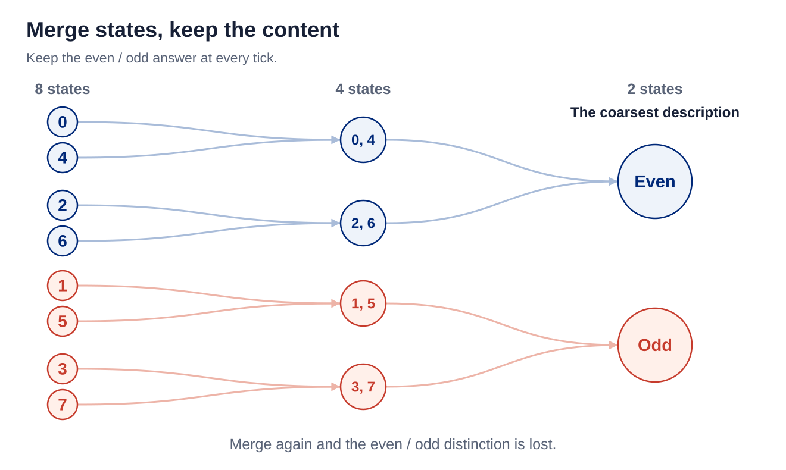

The objects and theorems of mathematics are as objective and independent of our free choice and our creative acts as is the physical world.
In 2024, neuroscientists published a map of the neurons and synapses in the brain of an adult fruit fly. A computer model built on that map, with each neuron reduced to a unit that adds up its inputs and fires when they cross a threshold, reproduced the effects of selected interventions on the animal’s feeding and grooming circuits. The model eats nothing and grooms nothing. It is a table of numbers that a program updates.
Suppose the same were done for a human brain. The usual question is whether the result would be conscious. In a new paper I ask a narrower one that can be worked on: what must a simulation of a brain retain for a given feature of its experience to be preserved? The answer I propose depends on the feature. Under hypotheses I state below, a simulation shares the experienced red of a sunset, or the sense that time is passing, exactly when it realizes the mathematical organization that constitutes that feature in the brain, in a corresponding state. Everything else about the two systems may differ.
The question has practical weight. Brain interfaces that close a loop between recording and stimulation have bridged damaged cortical pathways in animals and improved memory encoding in people. Devices that replace or extend larger parts of the cortex are, for now, a conceptual extension of that work, and they pose the same problem in a clinic: which aspects of a person’s mental life would the device retain? Large language models pose it from another direction. They learn to predict text from records of human language, and their fluency has prompted assessments of whether they might have experience.
Every model keeps some distinctions and drops the rest
No simulation contains everything. A model of the worm C. elegans can track the calcium activity of individual neurons. The fly model tracks their spiking, models of mouse visual cortex track cells and synapses, and whole-brain models of people track the average activity of neural populations. A language model works at a coarser level still. Its unit is the token, a fragment of text, and text merges the neural, bodily and motor histories that produced it.
![Four cards. C. elegans: grain, neuronal calcium activity; emulator, fitted linear state-space dynamics; evidence, perturbation responses in held-out animals. Fruit fly: grain, neuronal states in a spiking model; emulator, connectome-based integrate-and-fire model; evidence, selected feeding and grooming intervention tests. Mouse: grain, cellular and synaptic states in visual cortex; emulator, compartmental and point-neuron V1 networks; evidence, visual responses compared with recordings. Human: grain, neural populations, tokens or learned features; emulator, NMM2, LLMs and multimodal models; evidence, neural-response prediction and model alignment.](what-a-brain-simulation-must-keep/cards.png)
Each choice is a coarse-graining, a decision about which distinctions to retain. The level of detail it keeps is its grain.
A coarse-graining is useful to science when it is self-contained: the retained variables, together with the inputs, determine their own future. Physics has familiar cases. Two masses joined by a spring vibrate as they travel, yet with no outside force their center of mass moves at constant velocity whatever the vibration, so its position and velocity form a closed description. Neuroscience has such cases too. For an idealized population of model neurons, under conditions the mathematics states exactly, the firing rate and the mean membrane voltage together obey two exact equations. The firing rate alone does not. Two populations with the same rate and different mean voltages evolve differently.
A self-contained description can still lose what matters. A counter that cycles through 0, 1, 2 and 3 has a self-contained summary, even or odd, which flips at every tick and never needs more information. The summary has erased the difference between 0 and 2. If a feature of experience depended on that difference, the summary would run without error and the feature would be gone. Deciding what a simulation must keep therefore takes two separate checks, one for self-containment and one for content.
On the premise, the simulation already has experience
The mathematics in the paper can be assessed apart from my philosophical starting point, which I should state. Kolmogorov Theory, the framework this work belongs to, takes experience as fundamental and mathematics as its structural aspect. A system’s structured experience corresponds to the mathematical organization it realizes. This is idealism in a structural form. It does not say that particles are small subjects. It says that there is one experiential base and that organization gives experience its particular shape, in a brain or anywhere else.
One system supports many descriptions. A brain can be described cell by cell, circuit by circuit or as a whole, and where its boundary is drawn is also a choice. On this premise every admissible coarse-graining of a system comes with its own structured experience, where admissible means that the description is self-contained and that the system’s own dynamics realize it. None has exclusive status. Several coexist in one brain, and several in one running simulation.
A running brain simulation therefore has structured experience of its own. What remains open is which features it shares with the brain it copies. A second hypothesis supplies the criterion. A feature of experience and the organization that constitutes it correspond one to one, so two systems share the feature exactly when they realize that organization, in corresponding states or histories, whatever they are made of. David Chalmers’s principle of organizational invariance is a precedent.
The comparison is made one feature at a time. Features of bodily and affective experience may depend on hormonal and metabolic relations that a coarse model omits, while other features survive in the coarse description. The outcome is a profile of shared features, with no single threshold at which a machine becomes humanlike.
Matching a recording is weaker than matching every response
A simulation can reproduce a recording of brain activity without realizing the organization that produced it. The paper’s criterion concerns responses. At the chosen grain and to a stated accuracy, the emulator must respond as the brain does to inputs and interventions that were not used to build or fit it. Interventions act on the inside of the system, as brain stimulation does, and the comparison includes readings of internal variables, as a neural recording provides.
The emulator must respond as the brain does to inputs and interventions that were not used to build it.
Image classifiers show what failure looks like. A picture can be altered so that a person reports the same object while a network changes its answer. If such pictures are among the admitted inputs, the network does not correspond to human perception at the grain of reported object category. One remedy is to change what the model retains. Networks trained only on sharp images rely on fine detail to which human report is largely insensitive, and training on blurred images brings their behavior closer to human perception. Each revised model then faces the same test.
Exact copies share an update monoid
Fix the content to preserve and the operations allowed. For deterministic systems, a classical result going back to Edward Moore and Anil Nerode in the 1950s tells us which states we can merge: those that give the same content after every allowed sequence of operations. Combining them gives the coarsest self-contained description retaining that content, unique apart from the names of its states. The result guarantees that this description exists, without promising that it is small or within reach of experiment.

The updates of this description form a definite mathematical object. Each allowed operation acts on the retained state, operations applied in sequence make a further update, and doing nothing counts as an update. A collection with these properties is a monoid, and this one is the system’s update monoid. Two deterministic systems that agree on the content from their chosen starting states after every allowed sequence have matching minimal descriptions on the states they can reach, with matching updates. Whatever else differs between a brain and an exact emulator, they share this much.
For one kind of system the update monoid can be written out in full. Take a system that keeps a record of something in the world, such as a compass heading, and suppose only two kinds of event occur. The world can turn, and the record turns with it. Or the system can observe the heading and overwrite its record. A turn can be undone, because turning back restores the old record. An observation cannot, because whatever the record held before, it now reads East.
Swipe sideways to read the figure
![Three panels. Panel a: a compass in the world points East and the agent’s record, one of four states N, E, S, W, shows East. Panel b: the update monoid as eight small diagrams. Four blue diagrams, labeled symmetry core and reversible, show no turn and turns of 90, 180 and 270 degrees, each rearranging the four record states. Four coral diagrams, labeled observation writes and irreversible, show observe N, E, S and W, each sending all four states to the observed heading. Panel c: sequences with the same effect: turn 90 degrees four times equals no turn; observe E then turn 90 degrees equals observe S; turn 90 degrees then observe E equals observe E.](what-a-brain-simulation-must-keep/compass.png)
The paper proves that, at the minimal description, the tracker’s update monoid contains nothing else. Every sequence of events acts either as a reversible turn or as an irreversible overwrite. The reversible updates form a group, which is a monoid in which every update can be undone; here it consists of the four turns, counting no turn. This group is the tracker’s symmetry core, and the overwrites are the part of the monoid that cannot be undone. The statement applies to digital systems and to differential-equation models with resets alike, and its proof has been checked by machine in the Lean proof assistant.
The result constrains any machine that emulates the tracker exactly. A finite machine must contain, among its own updates, groups that map onto the tracker’s groups. A finite-state machine whose update monoid contains no nontrivial group cannot reproduce the four-heading compass exactly over all sequences of events, whatever its program.
Different programs can also share a law. Euler’s method and the fourth-order Runge–Kutta method advance a simulation through different intermediate steps. Given the compiled code of both, and told neither the equation nor the method, an analysis of the programs recovers the same differential equation from each. The demonstration covers a restricted class of arithmetic programs. The equation is what the two programs share, and their step-by-step arithmetic differs.
Agreement therefore comes in levels. Two systems can compute the same function by different algorithms, run one algorithm as different programs, and run one program on different machinery. The mathematics identifies what is shared at each level. It does not say which level a feature of experience depends on, and the paper fixes none.
The human candidate is an agent that reports to itself
For human experience the paper offers a conjecture. At a suitable boundary, which may include the body, human brain dynamics admit a self-contained description, identifiable through feasible experiments, that retains the organization necessary and sufficient for the features of experience under study. The coarse-graining must be fine enough to retain what a person reports to themselves or others, including how those reports are produced and used. These reports also provide evidence for testing it. My candidate is the algorithmic agent with internal reports. The agent couples a modeling engine, which builds and runs models of the world and of the agent itself; an objective function, which evaluates and ranks the states those models represent; and a planning engine, which uses both to select actions.
![Block diagram of an agent coupled to a world. Inside the agent, a Modeling Engine contains a Model, a Simulator, a Comparator and an Updater: the simulator sends a prediction and a precision to the comparator, which also receives input from the world; the error drives the updater, which revises the model. The model feeds an Objective Function, whose evaluation feeds a Planning Engine. The plan returns to the modeling engine and an output acts on the world. Dashed arrows crossing the agent boundary mark interventions, pointing in, and measurements, pointing out.](what-a-brain-simulation-must-keep/agent.png)
Each part of the agent has a proposed counterpart in experience. The structure of its models of the world and of itself corresponds to the structure of its experience of world and self. The ranking of states by its objective function corresponds to valence, how good or bad a state feels. The planning engine’s readiness for foreseen action corresponds to arousal. If these links hold, an emulator that preserves the structure of the models, the ranking and the readiness to act, in corresponding states, shares the corresponding structure of experience, valence and arousal.
Internal reports are part of the agent’s model. They are compressed records of past inputs and of the agent’s own earlier states, which the agent uses in modeling, evaluating and planning. A memoryless thermostat has none, since it maps the present temperature reading to a command. A navigation system that carries forward its estimates of position and velocity does. I hypothesize that the sense of continuing to be requires internal reports of a represented past that the system uses, and that such reports are probably not sufficient by themselves. Experience in general does not require reports.
A consequence concerns time. On this account, the duration an agent experiences between two events depends on its own activity between them: inputs processed, records formed and reused, actions simulated and evaluated. Running the emulator on a slower computer, or with more arithmetic steps per update, adds nothing to that activity. If the agent and its virtual world are slowed together, its experienced durations do not change. Greg Egan’s novel Permutation City follows people who live as software copies of their brains, and the paper thanks him for the inspiration.
Biological objections become questions about detail
The main objections come from biology. Anil Seth emphasizes metabolism, the regulation of the body and self-maintenance, while allowing that suitably brain-like or life-like artificial systems could qualify. In this framework that is a claim about which relations a model must retain. If a feature of bodily or affective experience depends on hormonal or metabolic processes, an emulator has to realize those relations, through added variables or a boundary widened to take in the body, and a coarse population model that omits them loses the feature. The required level of detail is an empirical matter. The conjecture fixes no anatomical level in advance.
The required level of detail is an empirical matter.
The stronger claim, that without biology there is no experience of any kind, denies the premise. It owes an account of which biological property is required, why experience would be absent without it, and what evidence shows this.
Another objection holds that digital computers cannot approximate brain dynamics even in principle. The brain would then have to perform hypercomputation, a task that no Turing machine can carry out, and the objector must identify that task in brain dynamics and explain how its inputs are reliably prepared and its outputs read.
Physics limits what such a task could draw on. An ordinary computer may use unlimited memory and time, but each memory element holds one of finitely many symbols, and each answer arrives after finitely many steps. Under assumptions the paper states, a mechanism of that kind is computable, so a proposal to do more has to violate at least one of the assumptions. A neural network with a noncomputable connection weight gives up finite memory elements. It treats one bounded component as an unlimited read-only memory, read at ever finer resolution. An accelerating machine gives up finite steps and completes infinitely many before it answers. Where they apply, known physical bounds grant neither resource to a system of finite size and energy. Black-hole thermodynamics limits the information such a system can hold, to about 2.6 × 1042 bits for the rest energy of a 1.5-kilogram mass within a radius of 6.7 centimeters, comparable to a human brain. Describing a voltage by a real number adds no capacity, because digits serve as memory only if the device can tell apart the alternatives they encode. Each step to a fully distinguishable state takes a minimum time set by the available energy, so infinitely many such steps in a finite time would require unlimited energy. A claim of hypercomputation in the brain must show that its complete setup, preparation and readout included, escapes these bounds.
Integrated information theory shares the view that experience depends on realized structure and not on behavior alone. It differs on which structure counts. The theory grants experience only to maximally irreducible structures, each at one selected grain, and it concludes that a simulation on a stored-program computer does not share a brain’s experience. In the present account no grain is privileged, and an emulator shares each feature whose constitutive organization it realizes.
The tests start in human brains
Humans are the reference case because first-person descriptions can be set beside neural measurements. A candidate description of brain dynamics is tested first for self-containment. Prepare the same retained state with different omitted details, apply the same inputs and stimulation, and check that a single law predicts what follows. It is tested next against experience. People are unresponsive under propofol, xenon and ketamine, yet the complexity of the brain’s response to a perturbation and the experiences reported afterward differ among the three, so responsiveness alone does not say what a person experienced. With a laser that stimulates selected cone cells in the retina, people have reported colors outside the ordinary gamut, and one can ask whether preserving the relations among patterns of receptor activity preserves the relations among experienced colors.
The same logic is being applied to mental health. At BCOM, the Algorithmic Neuropsychiatry program (ANPSY), led by Francesca Castaldo, is working toward a clinical system in which personalized brain and agent models, constrained by paired neural measurements, clinical assessments and structured first-person reports, would forecast how a given treatment changes a person’s neural activity, behavior and experience. Depression shows the kind of prediction at stake. An account that attributes reduced anticipated pleasure to impaired reward valuation predicts that anticipated pleasure rises when valuation is restored, with beliefs about reward availability held fixed. Predicting the brain, predicting experience and benefiting the patient are separate tests, and success on one does not establish the others.
Predicting the brain, predicting experience and benefiting the patient are separate tests.
An investigator can also run such experiments on their own brain, comparing their experience under controlled stimulation with measurements and model predictions. The most direct test of substrate is still hypothetical. Neural circuits would be replaced gradually with artificial components that preserve the proposed organization, and the participant would compare experience along the way. Experience that persisted through a complete replacement would count against the claim that biology is necessary for any experience.
Under the preservation hypothesis, a candidate that survives these tests in people becomes a specification of what an emulator must preserve, including its update monoid. Whether a given emulator meets it, including in its responses to matched interventions, has to be established separately.
Experiential dark matter
Attributing experience to an emulator extends an inference people already make. Only one’s own experience is directly accessible, and we attribute experience to others. Surveys of philosophers and consciousness researchers find high rates of attribution for humans and familiar mammals and lower rates for flies, plants and the AI systems of the time. The framework gives the inference an explicit structural basis.

It also implies a limit. Human experience, with its self-model and its internal reports, is one case among those the premise allows. A cat, a cricket, a plant, a cell or a digital system may each be an agent of the same kind at its own grain, with its own contents and timescales, and other organizations may support experience without reports. Much of this may have no path by which its contents could reach us. Such experience is dark matter relative to our means of access. The limits of what we can communicate and investigate do not mark the limits of experience.
The limit has an ethical side. Valence, on this account, follows the ranking made by the objective function and does not require memory. A system could suffer and never be able to say so afterward. A missing report does not remove the concern.
The fly model of 2024 preserves, as far as it has been tested, selected responses of two circuits. On the account given here it has structured experience of its own, and it shares with the animal exactly those features whose organization it realizes. Which features those are is unknown, for the fly and for the larger models to come. The experiments described above are the way to find out.